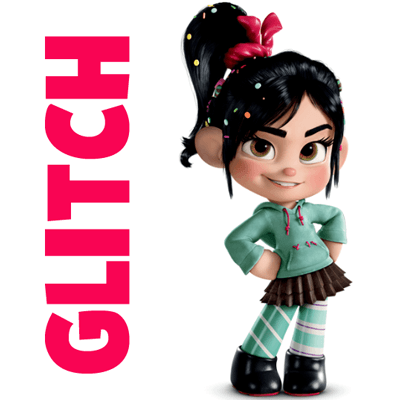

About Vanellope
Vanellope is a video game girl wanting to save the arcade. He meets some cool characterers along the way and finds bad guys. She becomes a good girl. He also likes befriending cool Wreck-It Ralph.
Vanellope_von_Schweetz
Vanellope's Characteristics
- She's week
- She's kind
- She's small
- She likes angry dudes.
- She likes people.